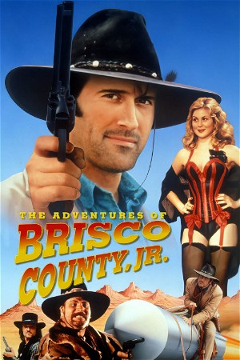

The Adventures of Brisco County, Jr. (1993)
WesternComedyActionScience Fiction
| Year | 1993 |
|---|---|
| Rating | US:TV-PG |
| Status | Completed |
| Seasons | 2 |
| Episodes | 28 |
| Genre | Western, Comedy, Action, Science Fiction |
A tough-as-rawhide cowpoke, debonair ladies' man and Harvard-educated smarty-britches roams from Frisco to Jalisco in pursuit of outlaws who killed his father...and in search of a mysterious orb possessing out-of-this world powers. Hot lead and cool anachronisms await Brisco as he and his sidekicks - including Comet, the intellectual equine who doesn't know he's a horse - fight for justice in the way, way, way-out West.
Episodes
Specials
| # | Title | Air Date | Synopsis |
|---|---|---|---|
| 6 | The Brisco County, Jr Reunion: Back in the Saddle | 2020-07-31 | The stars and creators of the cult classic "Brisco County, Jr" gather together for a table read of the pilot episode |
Season 1
| # | Title | Air Date | Synopsis |
|---|---|---|---|
| 1 | Pilot | 1993-08-27 | Bounty hunter Brisco is hired by the West's most powerful robber barons to bring down the John Bly gang. |
| 2 | The Orb Scholar | 1993-09-03 | Brisco follows a lead on Bly to the town of Poker Flats and finds Bly, the orb, and an old friend who once left him to die at the hands of the Swill brothers. |
| 3 | No Man's Land | 1993-09-10 | While tailing the bank-robbing Swill brothers (Will, Bill, Gil, and Phil), Brisco winds up in a town where sisterhood is the rule. |
| 4 | Brisco in Jalisco | 1993-09-17 | Brisco and Socrates head south of the border when the Westerfield Club orders them to recover some stolen guns. |
| 5 | Socrates' Sister | 1993-09-24 | Socrates'sister---who's also a lawyer---is tricked into aiding in the escape of her client, a Treasury-plate thief hauled in by Brisco. |
| 6 | Riverboat | 1993-10-01 | Socrates sends out an S.O.S. to Brisco when he loses Westerfield Club money to Brett Bones, a member of John Bly's gang, in a poker game. Brisco, Bowler, Socrates and Wylie set up a scam to get the money back and put Bon |
| 7 | Pirates | 1993-10-08 | Brisco and Lord Bowler compete to sink a band of pirates who have brought their swashbuckling ways onto dry land. |
| 8 | Senior Spirit | 1993-10-15 | Brisco gets help from his father's ghost when he tries to rescue a robber baron's son kidnapped by John Bly. |
| 9 | Brisco for the Defense | 1993-10-22 | Brisco is called upon by an old friend to serve as defense lawyer when the guy is accused of murdering a prominent citizen of a Wild West town. |
| 10 | Showdown | 1993-10-29 | Brisco takes over the duties of sheriff in his home town after it's taken over by a cattle baron. He also renews a relationship with the sheriff's daughter and his previous girlfriend. |
| 11 | Deep in the Heart of Dixie | 1993-11-05 | Brisco and Dixie find romance while on the run from an assassin in pursuit of Dixie, who has incriminating evidence against a politico. |
| 12 | Crystal Hawks | 1993-11-12 | Bounty hunter Crystal Hawks aims to bring in Brisco, who's wanted for a killing he didn't commit. |
| 13 | Steel Horses | 1993-11-19 | Brisco and Lord Bowler rev up to catch a gang that steals prototype motorcycles and roars off after the orb. |
| 14 | Mail Order Brides | 1993-12-10 | Three mail-order brides hire Brisco and Bowler to rope the Swill brothers, who've robbed them and are now seeking a prize bull. |
| 15 | A.K.A. Kansas | 1993-12-17 | Brisco pursues Dixie's ex-husband, who proposes that he and Dixie steal away after he heists a supercannon. |
| 16 | Bounty Hunter's Convention | 1994-01-07 | Brisco and Bowler joins other bounty hunters at an island lodge, where the hunters become the hunted. |
| 17 | Fountain of Youth | 1994-01-14 | Responding to a note from Prof. Coles, Brisco and Bowler end up on a collision course with Bly in pursuit of the orb. |
| 18 | Hard Rock | 1994-02-04 | Brisco and Bowler arrive in Hard Rock and try to stop local thug Roy Hondo from harassing Bowler's old flame, who resists the man's attempts to extort protection money. |
| 19 | Brooklyn Dodgers | 1994-02-11 | A pair of urchins wants to claim a gold mine, but needs Brisco and Bowler's help to dodge a ruthless New York gang to do it. |
| 20 | Bye Bly | 1994-02-18 | A figure from the future warns Brisco that Bly is going to escape from his orb prison. |
| 21 | Ned Zed | 1994-03-11 | A father reads his son a bed-time story from a dime novel, of how Brisco County and his “loyal sidekick” Lord Bowler brought in the notorious Ned Zed. |
| 22 | Stagecoach | 1994-04-01 | Brisco boards a stagecoach to escort a captured spy to the Mexican border for a prisoner exchange---and there's an assassin along. |
| 23 | Wild Card | 1994-04-08 | Brisco helps Dixie and her sister Dolly battle a mob seeking control of Reno gambling. |
| 24 | And Baby Makes Three | 1994-04-22 | A band of warriors are after the infant heir to the Chinese throne. |
| 25 | Bad Luck Betty | 1994-04-29 | Socrates is kidnapped by someone who's supposed to be dead. |
| 26 | High Treason: Part 1 | 1994-05-13 | Brisco and Bowler are tried for treason after trying to help the Army retrieve a kidnapped heiress. Part 1 of 2. |
| 27 | High Treason: Part 2 | 1994-05-20 | Conclusion. Brisco and Bowler escape execution, but an elite team has orders to hunt them down. |